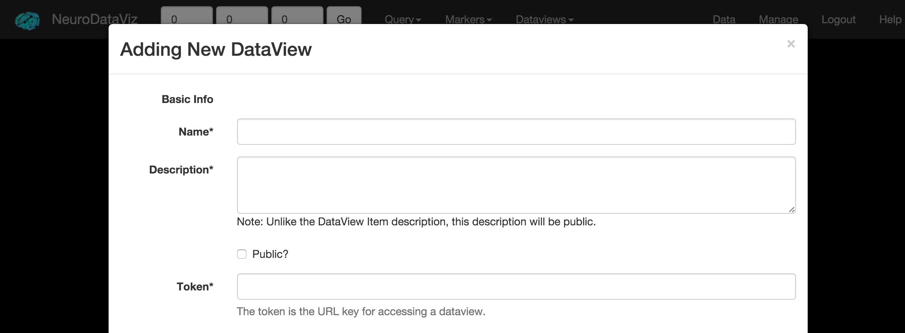
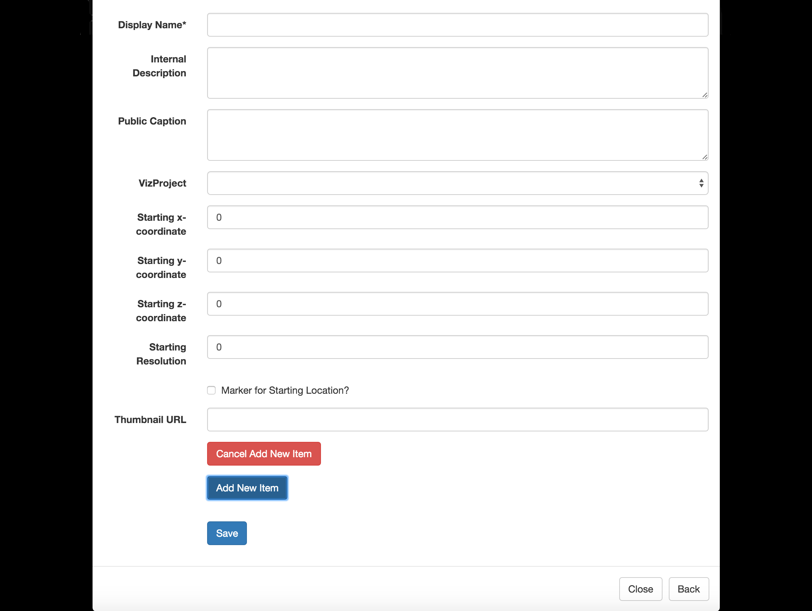

Creating a DataView
Recall, DataViews are collections of VizProjects. Public DataViews are displayed when clicking the Data tab in the navbar. Additionally, when viewing a VizProject, all associated public DataViews are displayed in the DataViews tab in the navbar.

Basic Information
- Name: A friendly name for the DataView. Since the token (accessor) for the DataView is different from the name, this field may contain spaces.
- Description: A short description for the DataView. The description is listed wherever the DataView is displayed.
- Public: If checked, the DataView will appear when clicking Data in the navbar and in the public_datasets list. Note: making a DataView public requires elevated permissions.
- Token: The token is the URL key for the DataView. For example, a token of mydataview would be accessed using the URL viz.neurodata.io/dataview/mydataview/.

Items
DataViews are collections of VizProjects, which are enumerated as DataView Items in the Add New DataView form.
- Display Name: A friendly name for the DataView Item / VizProject. Can be the name of the VizProject.
- Internal Description: This description will only be shown to the authenticated user (or administrators) and will be displayed on the Management Interface home screen. It is designed to help keep a large number of DataViews organized.
- Public Caption: Similar to the Internal Description field, but public facing and displayed on the DataView popup.
- VizProject: Select the VizProject that corresponds to this DataView Item.
- Starting Coordinate: A starting (x,y,z) coordinate and the corresponding resolution for the VizProject. NeuroDataViz defaults to half the imagesize in x,y, and z at the highest resolution. For now, these fields are required (very few projects display well at an initial coordinate of (0,0,0) at resolution 0).
- Marker for Starting Location?: Checking this box places a marker at the starting location when the VizProject is loaded.
- Thumbnail URL: A URL to a png thumbnail to display inline in the DataView.